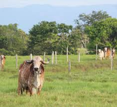
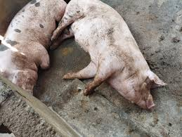
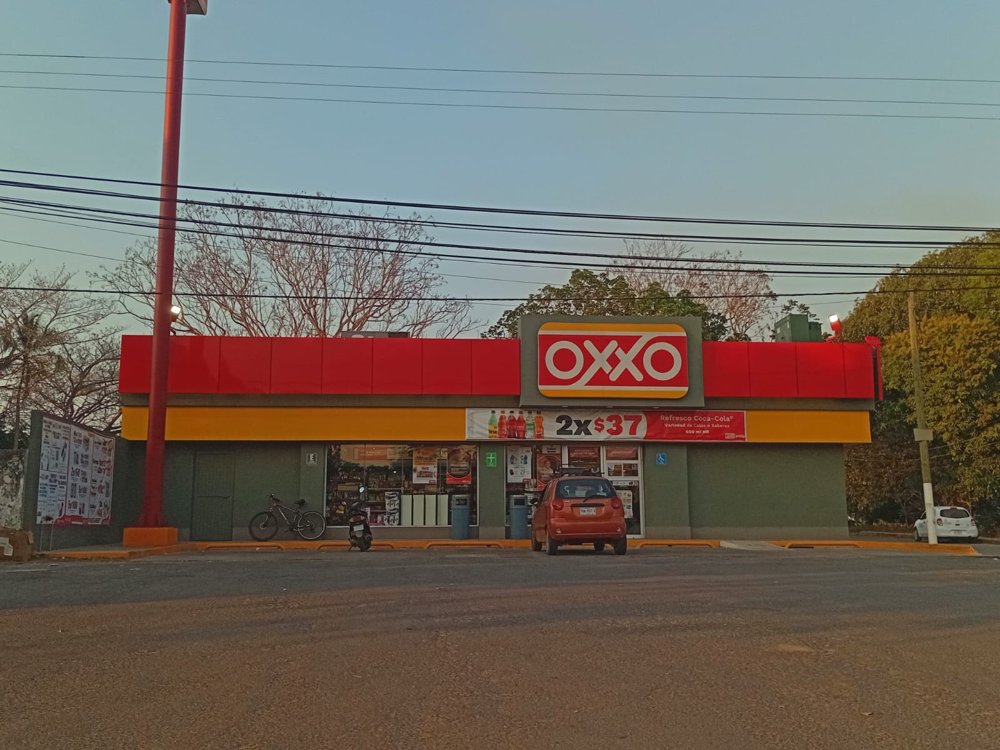
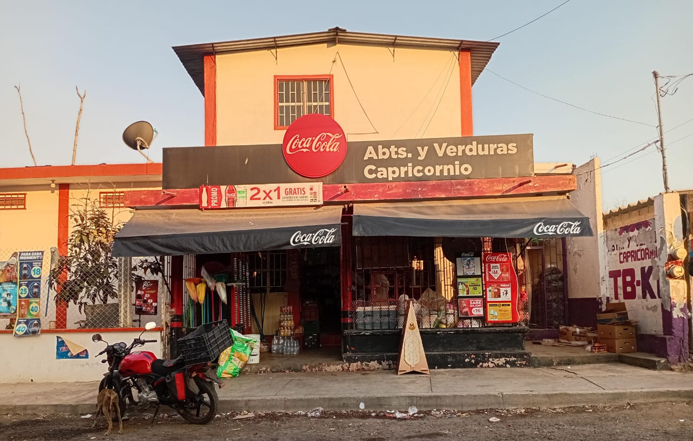
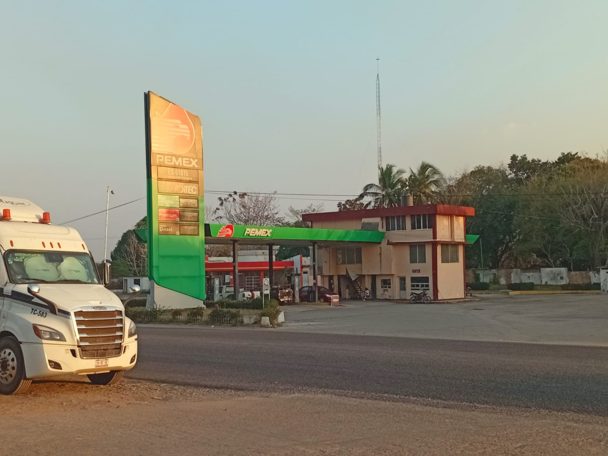
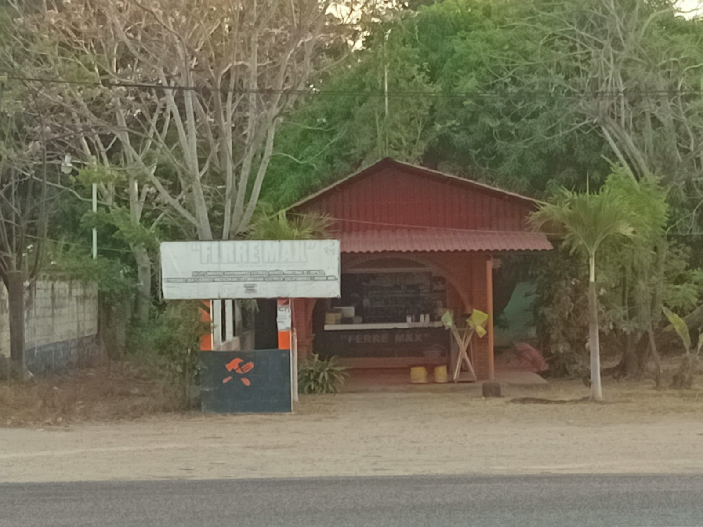
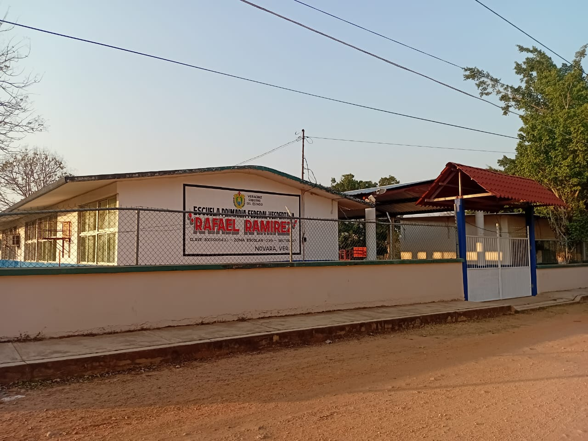

La economía de Novara, que es una localidad ubicada en el municipio de Tres Valles Veracruz, se basa principalmente en actividades agrícolas, ganaderas y comerciales. Las características geográficas que la rodean hace que su economía esté estrechamente ligada a la producción primaria y al comercio, como lo son:
La agricultura es la base fundamental de la economía de Novara. La región cuenta con tierras fértiles, lo que permite la siembra de diversos cultivos. Las principales son:
La ganadería es otro sector clave de la economía de Novara. La cría de ganado bovino como porcino es la más común, tanto para la producción de carne como para la leche. La ganadería ha sido tradicionalmente una fuente importante de empleo e ingresos para la población local, aunque también existe la crianza doméstica para estos.

https://goo.su/UYOTssJ
https://goo.su/D9cuAbz
El comercio es uno de los sectores claves para la economía local.
La tienda OXXO apoyan a la economía de Novara, siendo un centro de abastos como de servicios.

Las tienda de abarrotes Capricornio es uno de los principales factores económicos de Novara, es donde más recurren las personas para satisfacer sus necesidades básicas.

La gasolinera de Novara, también es uno de los principales productores económicos, al estar alado de carretera, lo vehículos que transitan por ahi, recurren a ella.

La ferretería Ferre Max representa un sector económico del lugar, siendo el único que abastece a Novara de productos ferreteros.

La escuela primaria Rafael Ramirez apoyan a la economía de la comunidad, es la única escuela en Novara de educación básica, siendo importante para esta comunidad.
